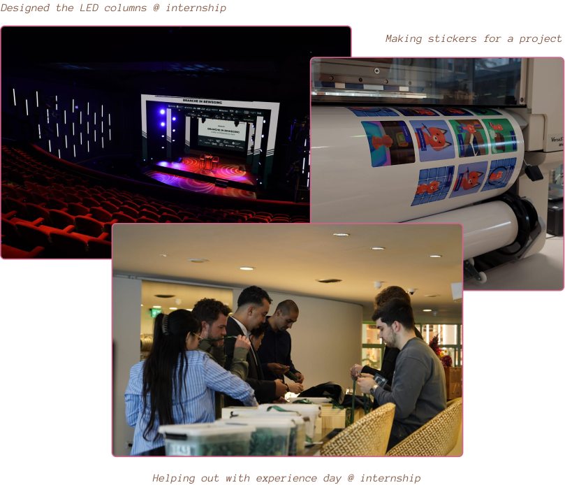
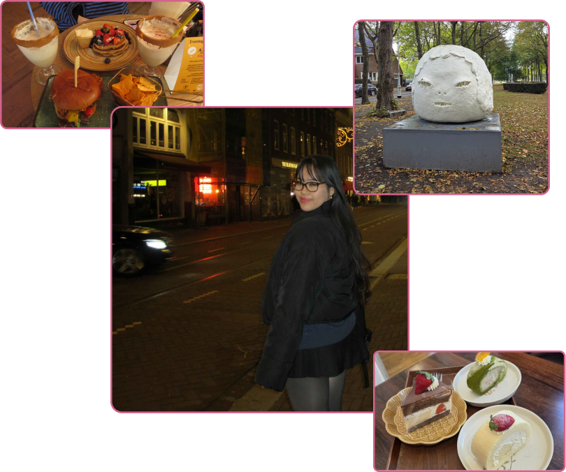

Hi! My name is Kelly and i'm currently a 3rd year communication and multimedia design student at the Amsterdam University of Applied Sciences (HvA) and I completed my first year of study Cum Laude.
So far I have learned quite a lot and worked on a ton of projects from designing prototypes in Figma to programming website. Currently with a strong interest in UX design and front-end development.
I'm a pretty easy going person who is able to work individually and in teams. I'm always ready for new opportunities to improve myself and for new abilties!
Usually I can be a bit introverted, but I have tried to push myself out of my own comfort zone by teaching adobe classes to CMD first year students in my second year and I even gave CMD info sessions to high school students to introduce them to the programme; I'm always seeking for fresh experiences.
September 2023 - Present
Amsterdam University of Applied Sciences (HvA)
Communication and multimedia design

April 2025 - August 2025
Ecocharting, Utrecht
UX/UI Intern → Part-time position (summer)
Extracurricular Activities

In my free time you'll probably find me somewhere in a cafe or any other cozy space drawing, reading, watching a movie, trying out new food spots or with friends.
Curious about my previous work?